1과목: 수질오염개론
1. 농업용수의 수질을 분석할 때 이용되는 SAR(Sodium Adsorption Ration)과 관계없는 것은?
2. 하천의 자정단계와 오염의 정도를 파악하는 Whipple의 자정단계(지대별 구분)에 대한 설명으로 틀린 것은?
3. 아세트산(CH3COOH) 120mg/l 용액의 pH는? (단, 아세트산 Ka 는 1.8×10-5)
4. 어느 시료의 대장균 수가 5,000/mL 이라면 대장균 수가100/mL 이 될 때까지 필요한 시간은? (단, 1차 반응 기준, 대장균의 반감기는 1시간이다.)
5. 0.01M-KBr과 0.02M-ZnSO4 용액의 이온강도는? (단, 완전 해리 기준)
6. 하천 수질모델 중 WQRRS에 관한 설명과 가장 거리가 먼 것은?
7. 용존산소농도가 9.0mg/L인 물 100L가 있다면, 이 물의 용존산소를 완전히 제거하려 할 때 필요한 이론적 Na2SO3의 량(g)은? (단, 원자량 Na：23)
8. 어느 배양기(培養基)의 제한기질농도(S)가 100mg/L, 세포 최대비증식계수(μmax)가 0.35/hr일 때 Monod식에 의한 세포의 비증식계수(μ)는? (단, 제한기질 반포화농도(Ks)는 30mg/L 이다.)
9. 적조 발생 요인과 가장 거리가 먼 것은?
10. 물의 특성에 관한 설명으로 옳지 않은 것은?
11. 하수에 유입된 어떤 유해 물질을 제거하기 위해 사전에 pH3 에서 pH7 까지 올려야 한다면 다른 영향이 없고 계산대로 반응할 경우 공업용 수산화나트륨(순도 95%)을 하수 1L에 몇 g 정도 투입하여야 하는가? (단, 완전해리 기준, Na＝23)
12. 최종 BOD가 200mg/L, 탈산소계수(자연대수를 Base로 함)가 0.2day-1 인 오수의 5일 소모 BOD는?
13. Glycine(C2H5O2N)이 호기성 조건에서 CO2, H2O와 HNO3로 분해된다면 Glycine 30g 분해에 소요되는 산소량은?
14. 최종 BOD가 20mg/L, DO가 5mg/L인 하천의 상류지점으로부터 3일 유하 거리의 하류지점에서의 DO 농도(mg/L)는?(단, 온도 변화는 없으며 DO 포화농도는 9mg/L이고, 탈산소계수는 0.1/day, 재폭기계수는 0.2/day, 상용대수 기준임)
15. 기체의 법칙 중 Graham의 법칙에 관한 설명으로 가장 적절한 것은?
16. 25℃, 4atm의 압력에 있는 메탄가스 15kg 을 저장하는데 필요한 탱크의 부피는?(단, 이상기체의 법칙 적용, R＝0.082Lㆍatm/molㆍ°K(표준 상태기준))
17. 수질분석 결과가 다음과 같다. 이 시료의 경도 값은? (단, Ca＝40, Mg＝24, Na＝23 이다.)
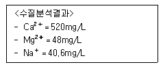
18. 2,000mg/L Ca(OH)2 용액의 pH는? (단, Ca(OH)2는 완전 해리되며 Ca의 원자량은 40)
19. 생물체 내에서 일어나는 에너지 대사에 적용되는 열역학법칙 내용과 거리가 먼 것은?
20. 유량 30,000m3/day, BOD 1mg/L인 하천에 유량 1,000m3/day, BOD 220mg/L의 생활오수가 처리되지 않고 유입되고 있다. 하천수와 생활오수가 합류 직후 완전 혼합 된다고 가정할 때, 합류 후 하천의 BOD를 3mg/L로 유지하기 위해서 필요한 생활오수의 최소 BOD 제거율(%)은?
2과목: 상하수도계획
21. 해수담수화를 위해 해수를 취수할 때 취수위치에 따른 장단점으로 틀린 것은?
22. 펌프 흡입구의 유속이 4m/sec 이고 펌프의 토출량은 840m3/hr 일 때, 하수 이송에 사용되는 이 펌프의 흡입구경은?
23. 관거별 계획하수량을 정할 때 고려해야 할 사항 중 틀린 것은?
24. 해수담수화시설 중 역삼투설비에 관한 설명으로 옳지 않은 것은?
25. 하수관거 배수설비의 설명 중 옳지 않은 것은?
26. 상수시설 중 배수시설을 설계하고 정비할 때에 설계상의 기본적인 사항 중 옳은 것은?
27. 정수방법인 완속여과방식에 관한 설명으로 틀린 것은?
28. 최근 정수장에서 응집제로서 많이 사용되고 있는 폴리염화 알루미늄(PACl)에 대한 설명으로 옳은 것은?
29. 상수도관에서 발생되는 부식 중 자연부식(마이크로셀 부식)에 해당되는 것은?
30. 하수배제방식이 합류식인 경우 중계펌프장의 계획하수량으로 가장 옳은 것은?
31. 상수도시설인 주요 저수시설에 대한 설명으로 틀린 것은?
32. 정수시설인 하니콤방식에 관한 설명으로 틀린 것은? (단, 회전원판방식과 비교 기준)
33. 다음은 상수도시설인 착수정에 관한 내용이다. ( )안에 내용으로 옳은 것은?
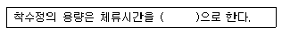
34. 하수관거시설인 우수토실에 관한 설명 중 잘못된 것은?
35. 상수도 기본계획수립시 기본사항에 대한 결정 중 계획(목표)년도에 관한 내용으로 옳은 것은?
36. 화학적 처리를 위한 응집시설 중 급속혼화시설에 관한 설명이다. ( )안에 옳은 내용은?
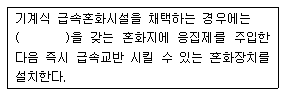
37. 관경 1,100mm, 역사이펀 관거내의 유속에 대한 동수경사 2.4‰, 유속 2.15m/sec, 역사이펀 관거의 길이 L＝76m일 때, 역사이펀의 손실수두는? (단, β=1.5, α=0.⑤m이다.)
38. 다음은 하수관거의 접합방법을 정할 때의 고려사항이다. ( )안에 가장 적합한 것은?
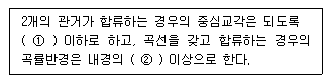
39. 하수관거시설이 황화수소에 의하여 부식되는 것을 방지하기 위한 대책으로 틀린 것은?
40. 상수시설인 배수시설중 배수지의 유효수심범위(표준)로 적절한 것은?
3과목: 수질오염방지기술
41. 역삼투 장치로 하루에 1,710m3의 3차 처리된 유출수를 탈염시키고자 한다. 요구되는 막면적(m2)은? (단, - 유입수와 유출수 사이의 압력차＝2,400kPa, - 25℃에서 물질전달계수＝0.2068L/(day-m2)(kPa), - 최저 운전 온도＝10℃, -A10℃=1.58A25℃, - 유입수와 유출수의 삼투압 차＝310kPa)
42. 생물막법 처리방식인 접촉산화법의 장단점으로 옳지 않은 것은?
43. 생물학적 질소제거공정에서 질산화로 생성된 NO3--N 40mg/L가 탈질되어 질소로 환원될 때 필요한 이론적인 메탄올(CH3OH)의 양(mg/L)는?
44. 농축슬러지를 혐기성소화를 통해 안정화시키고 있다. 조건이 다음과 같을 때 메탄 생성량(kg/day)은?
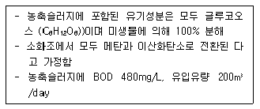
45. CSTR 반응조를 일차반응조건으로 설계하고, A의 제거 또는 전환율이 90%가 되게 하고자 한다. 만일, 반응상수, k가 0.35/hr이면 이 CSTR 반응조의 체류시간은?
46. 폭기조 내의 혼합액의 SVI가 100이고, MLSS 농도를 2,200mg/L로 유지하려면 적정한 슬러지의 반송률은? (단, 유입수의 SS는 무시한다.)
47. 폐수량 500m3/일, BOD 300mg/L인 폐수를 표준 활성슬러지공법으로 처리하여 최종방류수 BOD 농도를 20mg/L 이하로 유지하고자 한다. 최초침전지 BOD 제거효율이 30%일 때 포기조와 최종침전지, 즉 2차 처리 공정에서 유지되어야 하는 최저 BOD 제거효율은?
48. 슬러지의 소화율(消化率)이란 생슬러지 중의 VS가 가스화 및 액화되는 비율을 말한다. 생슬러지와 소화슬러지의 VS/TS가 각각 80% 및 50%일 경우 소화율은?
49. 하수 소독시 적용되는 오존소독방법에 관한 일반적 장단점으로 옳지 않은 것은? (단, 염소소독 방법 등과 비교)
50. 하루 유량 5,000m3인 폐수를 용량이 1,500m3인 활성슬러지 폭기조로 처리한다. 이때 Kd=0.03/일 Y＝0.6 MLSSmg/BODmg, MLSS는 6,000mg/L로 유지되고 있고 유입 BOD 500mg/L는 활성슬러지 폭기조에서 BOD 90% 제거된다면 SRT는? (단, 활성슬러지 공법의 폭기조만 고려함)
51. 생물학적 원리를 이용하여 질소, 인을 제거하는 공정인 5단계 Bardenpho 공법에 관한 설명으로 옳지 않은 것은?
52. 막공법에 관한 내용으로 옳지 않은 것은?
53. 물리, 화학적으로 질소제거 공정인 파괴점 염소주입에 관한 내용으로 옳지 않은 것은?(단, 기타 방법과 비교 내용임)
54. 혐기성 소화법과 비교한 호기성 소화법의 장단점으로 옳지 않은 것은?
55. 폐수 유량이 3,000m3/d, 부유 고형물의 농도가 150mg/L이다. 공기부상 시험에서 공기와 고형물의 비가 0.⑤mg-air/mg-solid 일 때 최적의 부상을 나타낸다. 설계온도 20℃. 이때의 공기용해도는 18.7mL/L이다. 흡수비 0.5, 부하율이 0.12m3/m2ㆍmin일 때 반송이 있으며 운전압력이 3.5 기압인 부상조 표면적은?
56. 1,000m3의 하수로부터 최초침전지에서 생성되는 슬러지 양은?
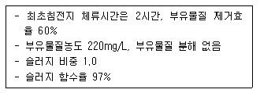
57. 암모니아성 질소가 25mg/L인 폐수의 완전 질산화에 필요한 이론적 산소요구량(mg/L)은?
58. 어느 특정한 산화지 내에 1일 BOD 부하를 30kg/dayㆍm2으로 설계하였다. 평균 유량이 2.5m3/min이고 BOD 농도가 270mg/L일 때 필요한 면적(m2)은? (단, 기타 조건은 고려하지 않음)
59. 생물학적 질소, 인제거를 위한 A2/0 공정 중 호기조의 역할로 옳게 짝지은 것은?
60. 슬러지를 진공 탈수시켜 부피가 50% 감소되었다. 유입슬러지 함수율이 98% 이었다면 탈수 후 슬러지의 함수율은? (단, 슬러지 비중은 1.0 기준)
4과목: 수질오염공정시험기준
61. 공장, 하수 및 폐수 종말처리장 등의 원수, 공정수, 배출수 등의 개수로 유량을 측정하는데 사용하는 웨어의 정확도 기준은? (단, 실제유량에 대한 %)
62. 시험과 관련된 총칙에 관한 설명으로 옳지 않은 것은?
63. 하천유량 측정을 위한 유속 면적법의 적용범위로 틀린 것은?
64. 다음은 퇴적물 완전연소가능량 측정에 관한 내용이다. ( )안에 옳은 내용은?
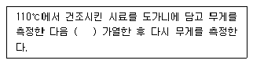
65. 웨어의 수두가 0.25m, 수로의 폭이 0.8m, 수로의 밑면에서 절단 하부점까지의 높이가 0.7m인 직각 3각웨어의 유량은 ?(단, 유량계수
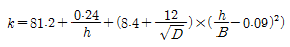
)66. 시료의 최대 보존기간이 다른 측정항목은?
67. 다음은 니켈의 자외선/가시선 분광법 측정에 관한 내용이다. ( )안에 내용으로 옳은 것은?
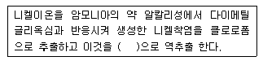
68. 효소이용정량법을 활용한 대장균 분석시 사용되는 검출기는?
69. 다음의 측정항목 중 시료 보존 방법이 다른 것은?
70. 암모니아성 질소의 분석방법과 가장 거리가 먼 것은? (단, 수질오염공정시험기준 기준)
71. 다음은 자외선/가시선 분광법을 적용한 크롬 측정에 관한 내용이다. ( )안에 옳은 내용은?
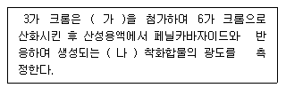
72. 다음은 수질연속자동측정기의 설치방법 중 시료채취 지점에 관한 내용이다. ( )안에 옳은 내용은?
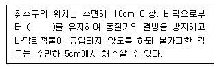
73. 0.025N-KMnO4 400mL를 조제하려면 KMnO4 약 몇 g을 취해야 하는가?(단, 원자량：K＝39, Mn＝55)
74. 총 유기탄소 측정시 적용되는 용어 정의로 옳지 않은 것은?
75. 노말헥산 추출물질의 정량한계는?
76. 기체크로마토그래피에 의해 유기인 측정에 관한 내용 중 간섭물질에 대한 설명으로 틀린 것은?
77. 유기물 함량이 비교적 높지 않고 금속의 수산화물, 산화물, 인산염 및 황화물을 함유하는 시료의 전처리(산분해법)방법으로 가장 적합한 것은?
78. 물 속에 존재하는 비소의 측정방법으로 거리가 먼 것은? (단, 수질오염공정시험기준 기준)
79. 분원성대장균군(막여과법) 분석 시험에 관한 내용으로 틀린 것은?(오류 신고가 접수된 문제입니다. 반드시 정답과 해설을 확인하시기 바랍니다.)
80. 고형물질이 많아 관을 메울 우려가 있는 폐ㆍ하수의 관내 유량을 측정하는 방법으로 가장 옳은 것은?
5과목: 수질환경관계법규
81. 공공수역의 수질보전을 위하여 고랭이 경작지에 대한 경작방법을 권고할 수 있는 기준(환경부령으로 정함)이 되는 해발고도와 경사도가 바르게 연결된 것은?
82. 다음은 기타 수질오염원의 설치ㆍ관리자가 하여야 할 조치에 관한 내용이다. ( )안에 옳은 내용은?
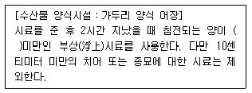
83. 일일기준초과 배출량 및 일일유량 산정 방법에 관한 내용으로 옳지 않은 것은?
84. 수질 및 수생태계 환경기준 중 하천에서의 사람의 건강보호 기준으로 옳은 것은?
85. 공공수역의 수질 및 수생태계 보전을 위하여 특정농작물의 경작 권고를 할 수 있는 자는?
86. 다음은 폐수종말처리시설의 유지ㆍ관리기준 중 처리시설의 관리ㆍ운영자가 실시하여야 하는 방류수 수질검사에 관한 내용이다. ( )안에 옳은 내용은? (단, 방류수 수질은 현저하게 악화되지 않음)
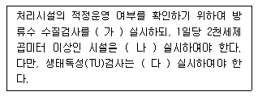
87. 다음 중 초과부과금 산정기준으로 적용되는 수질오염물질 1킬로그램당 부과 금액이 가장 높은(많은) 것은?
88. 중점관리저수지(농업용의 경우)의 해제 조건에 대한 설명으로 옳은 것은?
89. 다음 중 수질자동측정기기 및 부대시설을 모두 부착하지 아니할 수 있는 시설의 기준으로 옳은 것은?
90. 환경부 장관은 비점오염원관리지역을 지정, 고시한 때에는 비점오염원관리대책을 수립하여야 한다. 다음 중 관리대책에 포함되어야 할 사항과 가장 거리가 먼 것은?
91. 총량관리 단위 유역의 수질 측정방법 중 측정수질에 관한 내용으로 옳은 것은?
92. 폐수배출시설에 대한 배출부과금을 부과하는 경우, 배출부과금 부과기간의 시작일 전 6개월 이상 방류수 수질기준을 초과하는 수질오염물질을 배출하지 아니한 사업자에 대한 감면율을 적용하여 기본배출부과금을 감경할 수 있다. 1년 이상 2년 내에 방류수 수질 기준을 초과하여 오염물질을 배출하지 아니한 경우에 적용되는 감면율로 옳은 것은?
93. 대권역별 수질 및 수생태계 보전을 위한 기본계획에 포함되어야 할 사항과 가장 거리가 먼 것은?
94. 다음은 중점관리저수지의 관리자와 그 저수지의 소재지를 관할하는 시도지사가 수립하는 중점관리저수지의 수질오염방지 및 수질개선에 관한 대책에 포함되어야 하는 사항이다. ( )안의 내용으로 옳은 것은?
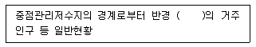
95. 비점오염저감시설을 자연형과 장치형 시설로 구분할 때 다음 중 장치형 시설에 해당하지 않는 것은?
96. 수질 및 수생태계 보전에 관한 법률에 사용하는 용어의 뜻으로 틀린 것은?
97. 시도지사가 오염총량관리기본계획의 승인을 받으려는 경우 오염총량관리기본계획에 첨부하여 환경부장관에게 제출하여야 하는 서류와 가장 거리가 먼 것은?
98. 비점오염원 관리지역의 지정 기준이 옳은 것은?
99. 환경부장관이 수질 등의 측정자료를 관리ㆍ분석하기 위하여 측정기기 부착사업자 등이 부착한 측정기기와 연결, 그 측정결과를 전산 처리할 수 있는 전산망 운영을 위한 수질원격감시체계 관제센터를 설치ㆍ운영할 수 있는 곳은?
100. 위임업무 보고사항 중 보고 횟수가 다른 업무내용은?